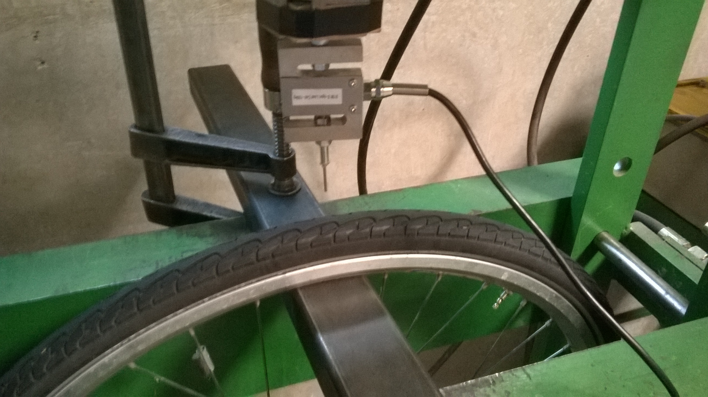

Banden
Prikweerstand
Bij dagelijks gebruik is een betrouwbare fiets zonder lekke band essentiëel. De prikweerstand is een maat voor de weerstand tegen lekrijden.
Definitie
Een gestandaardiseerde pin van 2 mm diameter wordt in de centerlijn van de band geprikt. De pin is gemonteerd op een krachtcell om de prikkracht te meten.
Meten
Om deze test uit te voeren is een pers vereist om de band gecontrolleerd te kunnen doorprikken. De band wordt opgepomt tot de aangegeven druk en op de pers geïnstalleerd. De pin wordt aan een lage constante snelheid in de band gebracht. Van het raken van de band tot het doorprikken zitten vijf seconden of meer. Voor elke band wordt deze test 3 maal herhaald en het gemiddelde van de maximale krachten wordt genomen.
Meetapparatuur
In het TGVelo labo wordt onderstaande meetapparatuur gebruikt.
De kracht wordt gemeten met een krachtcell tussen de sleden en de katrol. De zeer lage spanning van de krachtcell wordt ingelezen met een wheat stone bridge interfacetest

Datalogging
De data van de krachtcell interface wordt ingelezen en omgerekend naar spanning door arduino. Vanuit Arduino wordt het over usb via seriële communicatie doorgestuurd naar de computer waar een Scilab programma de data inleest, omrekend naar Newton en opslaat.
/* Setup and read load cell connected to arduino via the hx711 brakeout board * Code based on sample for digital weight scale of hx711 * library design: Weihong Guan (@aguegu) * library host on *https://github.com/aguegu/ardulibs/tree/3cdb78f3727d9682f7fd22156604fc1e4edd75d1/hx711 */ #include <Hx711.h> // Make a Hx711 object named scale // Hx711.DOUT - pin #A2 // Hx711.SCK - pin #A3 Hx711 scale(A2, A3); float max = 16777216; float druk = 0; void setup() { // Setup serial communication Serial.begin(9600); // Set scalefactor for conversion to kg // (uitgang 24 bit ADC -> voltage -> kg scale.setScale(1); //scale.setScale(1992.0/0.033); // Set size of moving average on data to reduce noise //scale.averageValue(3); } void loop() { float time = millis()/1000.0; // Print weight in kg (NOT IN gram) to serial port // Voor drukkracht max - getGram() druk = scale.getGram(); if (druk > max/2.0) druk = max - druk; else druk = - druk; druk = druk / 1000.0; // druk in mV, in kg Serial.print(druk, 3); Serial.print("\t"); // Pint a timestamp Serial.println(time, 3); delay(100); }